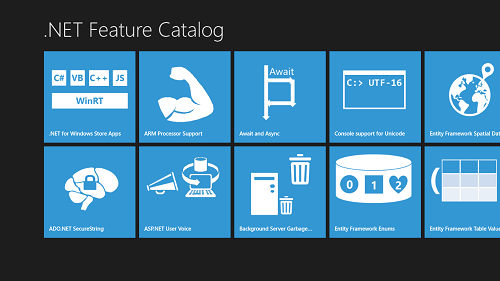
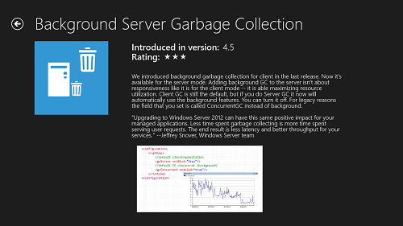
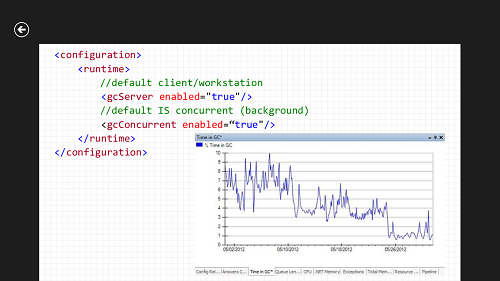

The .NET Framework 4.5 introduces a number of features to help solve the programming problems of today. This sample demonstrates end-to-end how to build a Windows 8 app that connects to a web backend using industry standard REST APIs. If you were at TechEd 2012 in North America or Europe, we showed you how to build this sample from scratch. The app itself is a catalog of some features found in the .NET Framework, so you can learn more about .NET simply by exploring the app.



Even though we're providing the .NET Feature Catalog sample in its final form, you need to populate the database before running it. To do that:
In the package manager console, run the following command:
Update-Database -ProjectName WebBackend
Description
NOTE: This sample is slightly revised from what we presented at TechEd 2012.
The sample is best experienced by watching the talk for What's New in .NET 4.5 from TechEd 2012. Click on either of the following to see the presentation given by Brandon Bray or Layla Driscoll respectively.
The main features we cover in the sample are:
This sample was created with the default project templates for Windows Store Grid App and an ASP.NET MVC 4 Web Application. The files that were edited during the TechEd demo were:
The MSDN topic for What's New in the .NET Framework 4.5 has a complete list of the new functionality. For the latest discussion about .NET, follow the .NET Team Blog or reach us on Twitter.